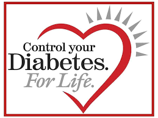

<!DOCTYPE html>
<html lang="en">
  <head>
    <meta charset="UTF-8" />
    <meta name="viewport" content="width=device-width, initial-scale=1.0" />
    <title>Abbottabad Diabetes & Footcare Center</title>
    <link rel="stylesheet" href="style.css" />
  </head>
  <body></body>
</html>

<div class="web">
  <header class="name">
    <div><h2>ABBOTTABAD DIABETES AND FOOTCARE CENTRE</h2></div>
    
  </header>
  <div class="links">
    <ul>
      <li>
        <a href="screening.html">SCREENING</a>
      </li>
      <li><a href="#">CLASSIFICATION</a></li>
      <li> <a href="#">DIABETES MANAGEMENT</a>
          </li>
      <li><a href="#">COMPLICATIONS</a>
        </li>
      <li><a href="#">DIABETES IN PAKISTAN</a></li>
    </ul>
  </div>
  <aside class="aside">
    <div class="profile">
      <h3>PROFILE</h3>
      <p>
        Greetings to all. I Dr Syed Ghulam Murtaza welcome you to the platform
        of Abbottabad Diabetes and Footcare Centre.I am a certified
        Diabetologist and Ultrasoundologist currently working in Abbottabad
        city. We specialize in preventive diabetes treatment, diabetic foot
        treatment, diabetic foot wear and ultrasound coupled with doppler.<!--We
        have a team comprising up of trained podiatrist, skilled coblers and
        certified pharmacists. -->
        <a href="#">See More</a>
      </p>
    </div>

    <div class="aboutus">
      <h3 style="text-align: center;">About Us</h3>
      <p style="text-align: center;">We are a fully fledged diabtes Centre located in Abbottabad city serving people with quality treatment ensuring satisfaction since a decade. We strive for perfection while ensuring quality protocols which aids in preventive treatment alongside lifestyle alterations. You may visit us or contact us for our support in managing your diabetes for life.</p>
      <hr>
      <h3 style="text-align: center;">Socialmedia Handles</h3>
      <ul>    
        <li><a href="https://www.youtube.com/@abbottabaddiabetesfootcare2796">Youtube</a></li>
        <li><a href="https://www.facebook.com/people/Abbottabad-diabetes-and-foot-care-center/100069267333416/">Facebook</a></li>
      </ul>

    </div>
  </aside>
  <div class="video">
  <div class="div6">6</div>
  <div class="book"><h3>Book an Appointment</h3>
    <p>Saif-ur-Rehman (0333-5036837)
      <br>
    Click for <a href="https://maps.app.goo.gl/oGpNbDktq1Fvhb3a6?g_st=iw">Address</a></p>
</div>
  <div class="services">
    <h3>Footcare Services</h3>
    <ul>
      <li>Foot Assessment</li>
      <li>Calculate your Risk Category</li>
      <li>Medical/Surgical Management</li>
      <li>Diabetic Footwear</li>
    </ul>
    <video src="clinicvideo.mp4" height="150" width="300" controls </video>
  </div> 
</div>
